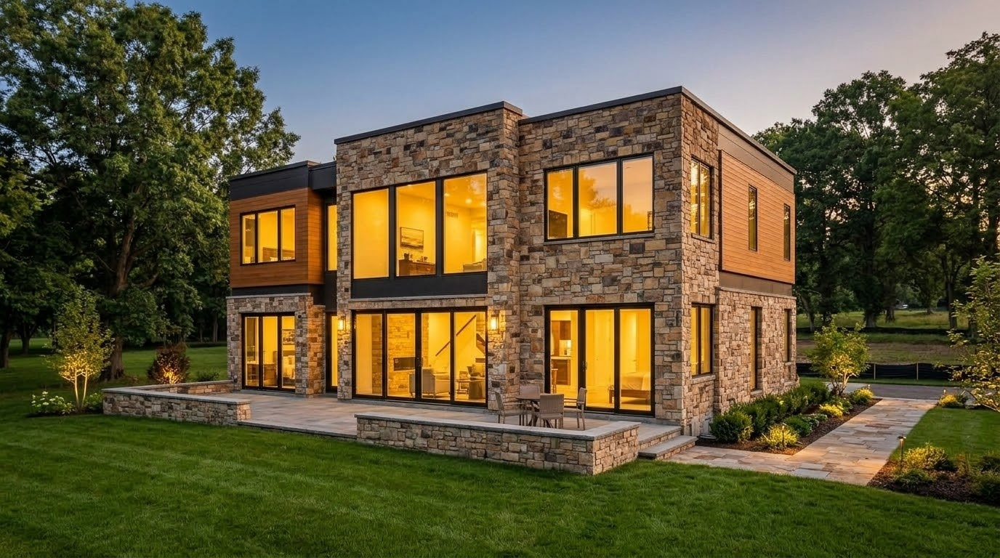

المرحلة 01
الأساسات والهيكل الإنشائي
بداية التنفيذ على أرض المشروع بأساسات متينة وتوزيع واضح للفتحات المعمارية والإطلالات الطبيعية لضمان قوة البناء وسلاسة المساحات الداخلية.
مرّر للأسفل لاستكشاف مراحل التنفيذ من الهيكل الإنشائي وحتى التسليم النهائي
بداية التنفيذ على أرض المشروع بأساسات متينة وتوزيع واضح للفتحات المعمارية والإطلالات الطبيعية لضمان قوة البناء وسلاسة المساحات الداخلية.

تشكيل الهوية الخارجية للفيلا عبر دمج الحجر الطبيعي مع الإطارات الداكنة والزجاج الواسع الذي يربط الداخل بالمساحات الخضراء المحيطة.

اكتمال الواجهة وتنسيق الممر الحجري والحديقة الأمامية مع إضاءة مسائية دافئة تبرز فخامة التصميم وجاهزية العقار للاستقبال والسكن.
حوّل صور ومراحل مشاريعك العقارية أو الإنشائية إلى عرض تفاعلي مقنع يبرز جودة التنفيذ أمام عملائك.
العودة إلى بداية العرض